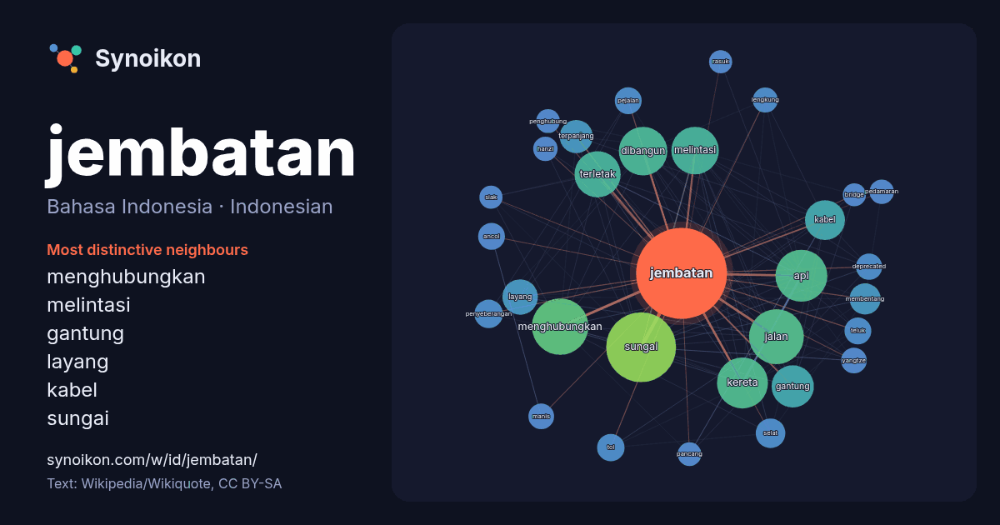

Bahasa Indonesia · Indonesian · word of the day list
jembatan
“bridge” · The words found around it in 1711 instances from Indonesian Wikipedia, Wikiquote.

Most distinctive neighbours
- menghubungkan 62×
- melintasi 50×
- gantung 48×
- layang 37×
- kabel 36×
- sungai 34×
- terpanjang 30×
- membentang 27×
- penyeberangan 25×
- api 24×
- selat 23×
- ancol 23×
- deprecated 22×
- kereta 22×
- pejalan 22×
- yangtze 21×
- dibangun 21×
- lengkung 20×
- tol 19×
- hanzi 19×
× = how many times more often than in general Indonesian Wikipedia text.
Most frequent neighbours
- sungai 156
- menghubungkan 102
- bahasa 99
- jalan 96
- api 86
- kereta 83
- dibangun 75
- melintasi 72
- kota 70
- terletak 68
- indonesia 59
- gantung 57
- kabel 51
- salah 50
- dikenal 46
- memiliki 46
- meter 42
- layang 40
- nama 40
- pembangunan 38
In context
- konstruksi yang tersedia. Struktur jembatan sederhana meliputi jembatan gelagar yang terbuat dari batang kayu, dan jembatan gantung yang terbuat dari tali Wikipedia snippets · Jembatan
- Jembatan Suramadu (bahasa Jawa: Kreteg Suramadu, bahasa Madura: Tètè Suramadu; dari singkatan Jembatan Surabaya–Madura) adalah jembatan kabel pancang Wikipedia snippets · Jembatan Nasional Suramadu
- yang benar adalah Timbangan Jembatan. Informasi dan Pelayanan Jembatan Timbang baru Dijelaskan beberapa hal mengenai Jembatan Timbang. Dasar Hukum adalah Wikipedia snippets · Jembatan timbang
- Jembatan Ampera (Jawi: جمبتن أمڤيرا) (Amanat Penderitaan Rakyat) adalah sebuah jembatan di Kota Palembang, Sumatera Selatan, Indonesia. Jembatan Ampera Wikipedia snippets · Jembatan Ampera
- sebelah barat Jembatan Merah. Jembatan inilah yang membatasi permukiman orang Eropa (Europeesche Wijk) waktu itu, yang ada di sebelah barat jembatan dengan tempat Wikipedia snippets · Kota Surabaya
- Jembatan Cisomang (Aksara Sunda Baku: ᮞᮞᮊ᮪ ᮎᮤᮛᮠᮧᮀ, Sunda: Sasak Cisomang) merupakan sebuah jembatan kereta api yang berlokasi di Desa Cisomang, Kecamatan Wikipedia snippets · Jembatan Cisomang
- sangat tinggi. Jembatan ini terletak di atas Kali Bekasi, membentang antara Stasiun Bekasi dan Stasiun Bekasi Timur. Dari segi lokasi, jembatan ini menghubungkan Wikipedia snippets · Jembatan Kereta Api Kali Bekasi lama
- Jembatan Panus merupakan jembatan penghubung wilayah Bogor dan Batavia pada masa kolonial. Jembatan yang memiliki lebar lima meter dan panjang 100 meter Wikipedia snippets · Jembatan Panus
More Indonesian words
- air
- anjing
- bahasa
- emas
- iklim
- jantung
- kebenaran
- kehidupan
- kekuasaan
- keluarga
- kematian
- kereta
- kerja
- kesehatan
- kesenian
- kucing
- lingkungan
- makanan
- sains
- sejarah
- tuhan
- uang
Precomputed on 2026-10-09 with default settings (±5 words, medium corpus). The interactive map can refresh it with live data.